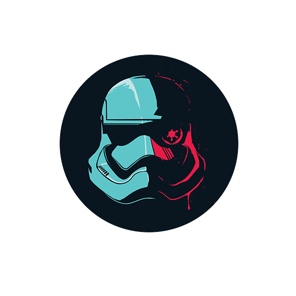

<ion-header>
  <ion-toolbar color="dark">
    <ion-title class="text-center">
      STAR WARS
    </ion-title>
  </ion-toolbar>
</ion-header>
 
<ion-content class="botones" color="dark">
  <h1>WELCOME TO</h1>
  <h1>INFO STAR WARS APP</h1>
  <h5 >In this app you can search your favorite charcaters from Star Wars Universe and add your favorite characters to Character's list </h5>
  
  <ion-buttons>
    <ion-button id="search" routerLink="/personajes">SEARCH CHARACTERS</ion-button><br>
    <ion-button id="view" routerLink="/favoritos">VIEW CHARACTERS</ion-button>
  </ion-buttons>
</ion-content>